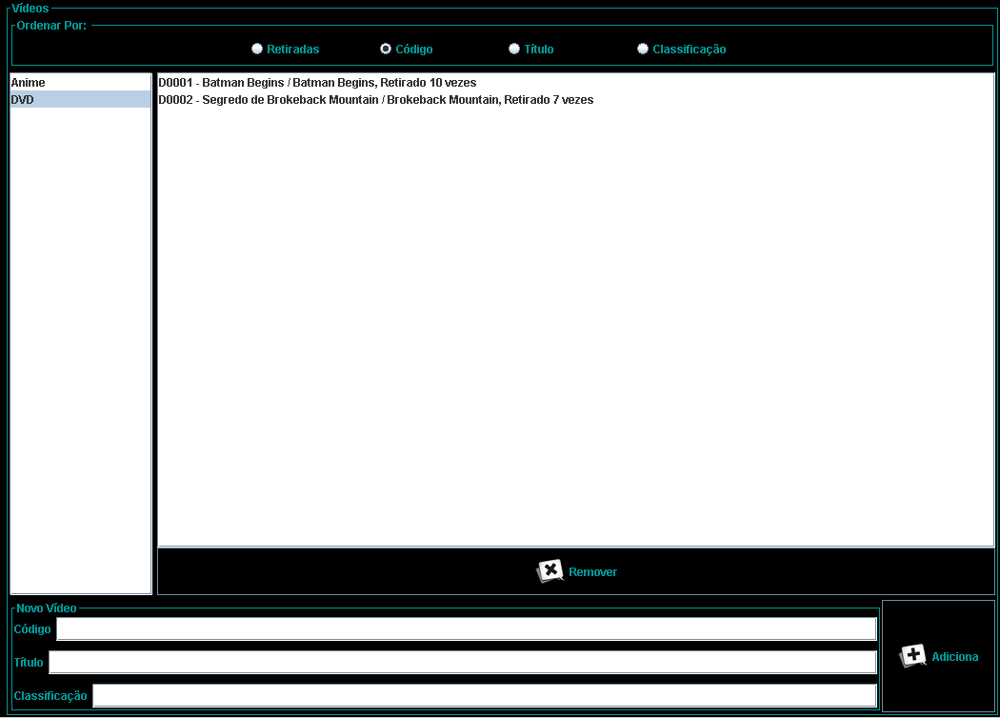
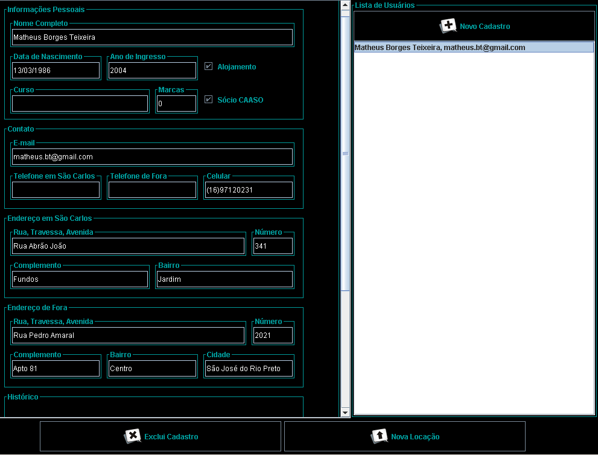
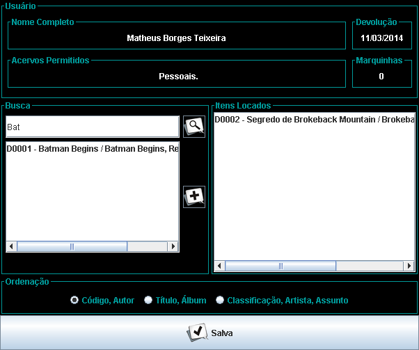
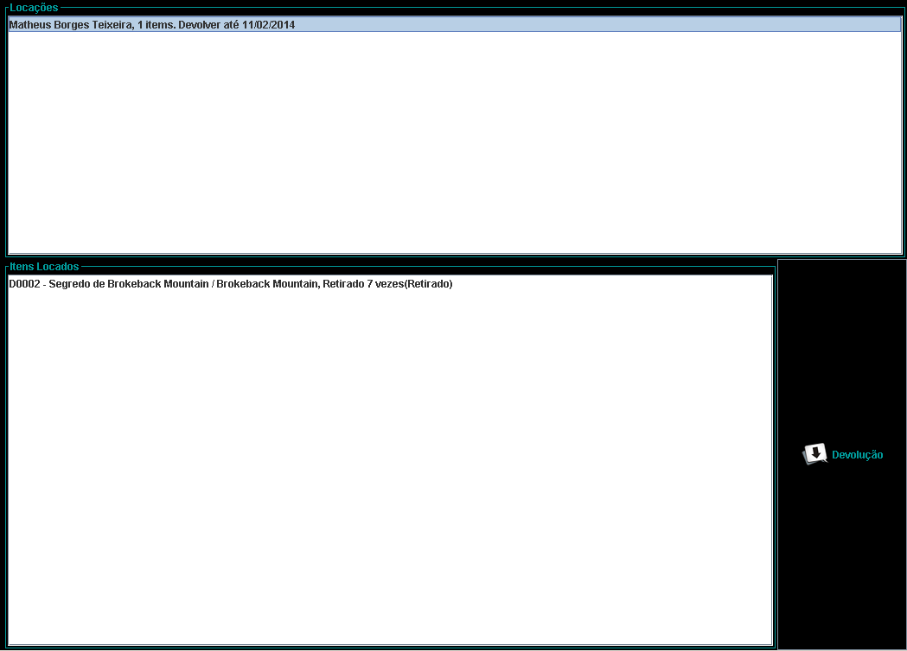

Barra Lateral

É usada para alternar entre os painéis principais do programa.
Manutenção de Acervos
O painel é o mesmo para todos os tipos de acervo. A diferença está apenas na semântica do conteúdo, pois CDs contêm "Álbum e Artista", Videos contêm "Título e Título Original", Jogos contêm "Título e Classificação", todos com "Código" e Livros que contêm "Autor, Título e Assunto.". Não é possível editar um item do acervo depois que o mesmo for adicionado, mas é possível remover. A lista de itens do acervo pode ser ordenada por qualquer um dos três parâmetros e também pelo número de retiradas.
Manutenção de Usuários e Nova Locação
Assim como na manutenção de acervos, é apenas possível adicionar e remover usuários, não é possível editar informações depois de inseridas. Ao selecionar usuários, é possível observar todas as informações e também um histórico de locações efetuadas.
Novo Cadastro
O botão "Novo Cadastro" abre uma nova janela como a seguinte:
Nova Locação
O botão "Nova Locação" abre a seguinte janela com as informações para locação:
Os acervos permitidos são apenas para referência, não existe nenhuma restrição de software para seleção de itens. A busca funciona por qualquer conjunto de caracteres, e encontrará apenas comparações exatas (sem substituição de caracteres especiais ou letras maiúsculas). É preciso buscar para adicionar um item para locação. Depois de adicionado, não é possível remover um item da locação. A data de devolução é calculada com base nas configurações da biblioteca para o item que contiver a data mais próxima. Importante: O cálculo da devolução é bem específico do sistema utilizado pela BiblioteCAASO, sendo sempre uma semana e caso seja no Sábado ou Domingo, é extendida até a próxima Segunda.
Configuração da Biblioteca

Neste painel é possível remover e adicionar acervos dentro das quatro categorias e configurar, por categoria, quantas semanas o item pode ficar em uma locação.
Manutenção de Locações
As locações são ordenadas por ordem em que foram feitas, e não pela data de devolução.
Devolução
O botão devolução abre a seguinte janela:
É preciso inserir o valor que será cobrado do usuário para controle financeiro. A quantidade de "Marquinhas" (Pontos Bônus) são mostrados para referência. É possível adicionar marquinhas ou removê-las, colocando valores negativos.